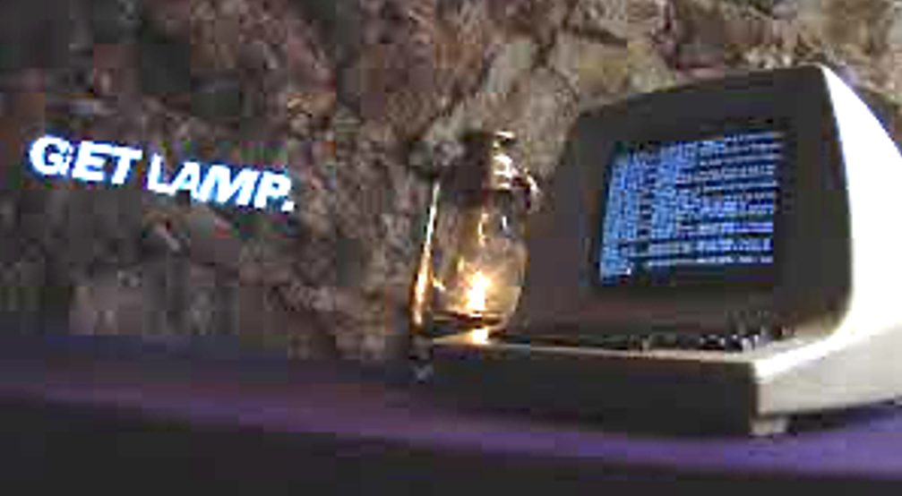
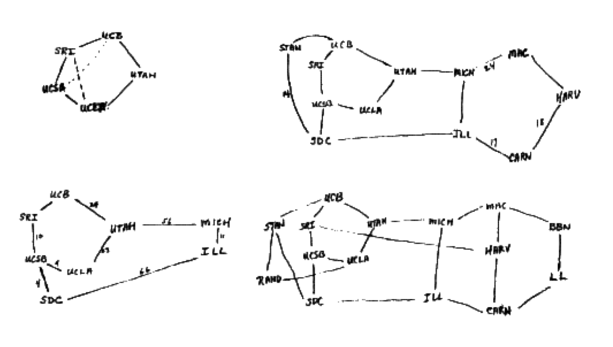
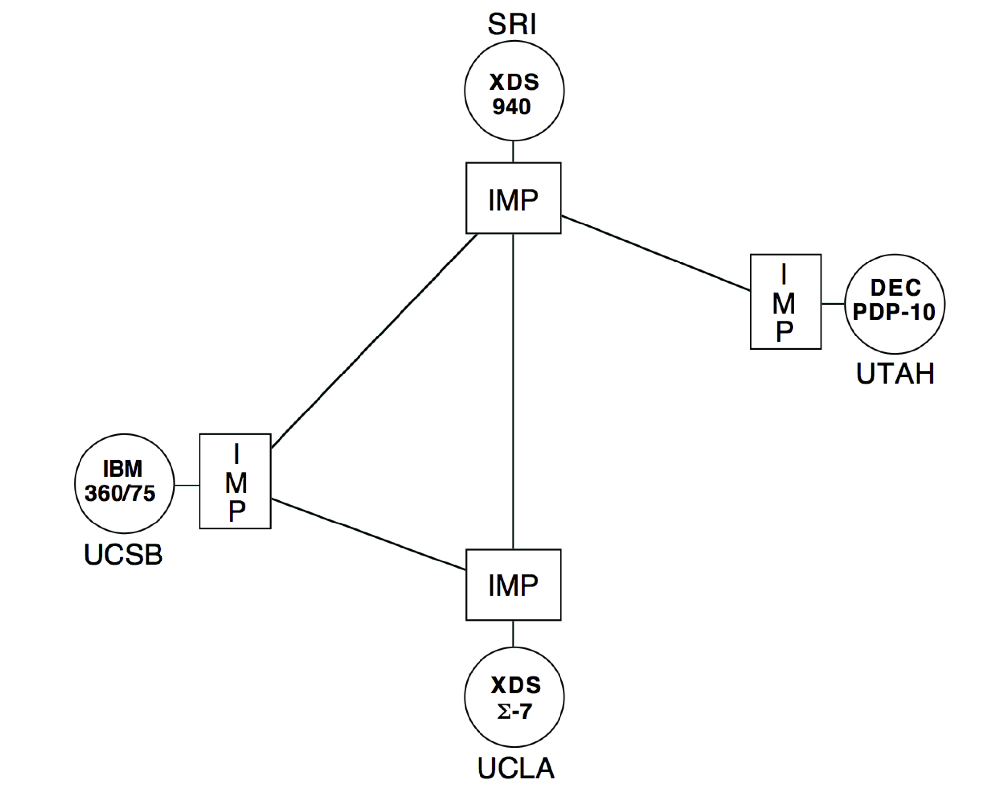
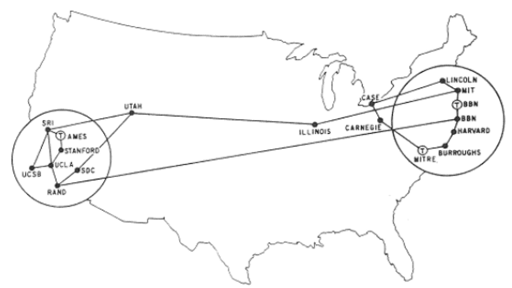
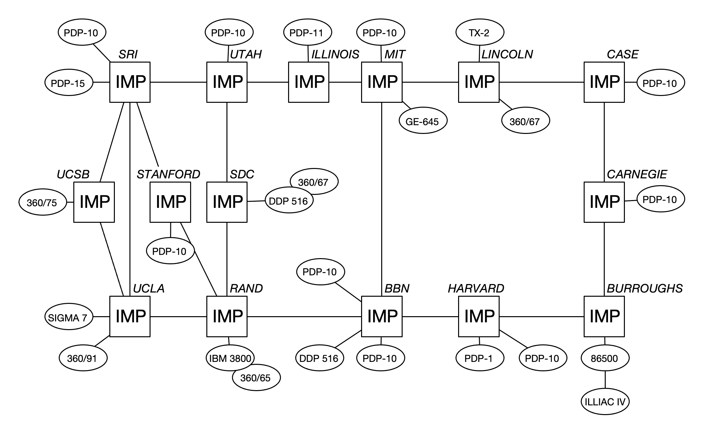
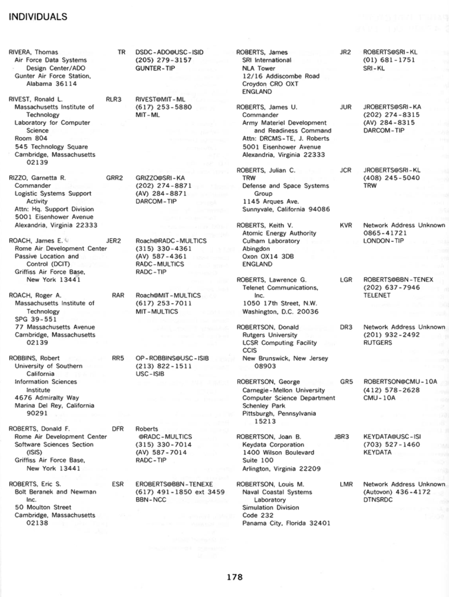
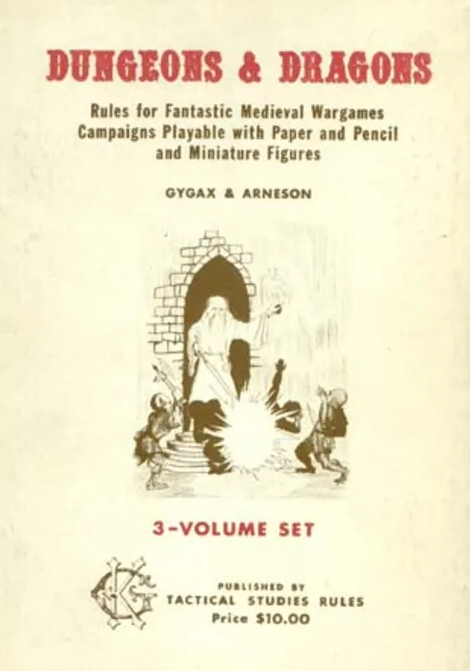

Adventure
Eric Roberts
14 April 2025

Myst
- When Myst appeared in 1993 (back when computers were too slow to animate more than a small part of the screen), the most common question I got from my students was: Can I write Myst?
The Origins of the Internet
- The Internet that has become so much a part of today’s world got its start as the ARPANET in the late 1960s.
- The contract to build the ARPANET was awarded to Bolt Beranek and Newman Inc. (BBN), a small, Cambridge-based research and development firm founded by MIT engineers. A prototype implementation of the ARPANET connecting four nodes came on line in December 1969.
- The initial design for the ARPANET allowed for a maximum of 127 connected computers. Larger networks were possible only after the TCP/IP protocols were adopted in the 1980s.
Early Designs for the ARPANET
|
As Larry Roberts envisioned it:  |
As implemented in 1969:  |
The ARPANET in 1971: Geographic Map

The ARPANET in 1971: Logical Map

The ARPANET Directory

Life among the Wizards
- The history of the Internet has been told in several books.
One tells the following story:


A small circle of friends at BBN had gotten hooked on Dungeons and Dragons, an elaborate fantasy role-playing game in which one player invents a setting and populates it with monsters and puzzles, and the other players then make their way through that setting. The game exists only in the minds of the players.
Dave Walden got his introduction to the game one night when Eric Roberts, a student from a class he was teaching at Harvard, took him to a D&D session. Walden immediately rounded up a group of friends from the ARPANET team for continued sessions. Roberts created the Mirkwood Tales. . . .
One of the regulars was Will Crowther . . .

The BBN ARPANET Team
Dave Walden
Will Crowther
Willie Crowther’s Adventure Game
Adventure |
In the Age of the Slow Machine
Adventure |
|
|
A Brief History of Adventure
- Eric Roberts begins the Mirkwood Tales in early 1975.
- Will Crowther creates Adventure later that year.
- Will moves to Xerox/PARC in 1976.
- Stanford graduate student Don Woods releases an expanded version of Adventure in early 1977.
- Dave Lebling and others from MIT release the first version of Zork in 1977. That game later becomes the foundation of the computer game company Infocom.
- Adventure is ported to a wide variety of platforms by 1980.
- Eric Roberts creates an expanded version in 1984 and uses it as the basis for his first Adventure Contest at Wellesley.
Adventure Is Still of Interest
Milestone #1
- Adapt the code from the Teaching Machine application so that it uses the class and method names for Adventure.
- Once you finish this milestone, you should be able to wander around the surface geography of the game.
Adventure |
The TinyRooms.txt Data File
OutsideBuilding
Outside building
You are standing at the end of a road before a small brick
building. A small stream flows out of the building and
down a gully to the south. A road runs up a small hill
to the west.
-----
WEST: EndOfRoad
UP: EndOfRoad
NORTH: InsideBuilding
IN: InsideBuilding
SOUTH: Valley
DOWN: Valley
EndOfRoad
End of road
You are at the end of a road at the top of a small hill.
You can see a small building in the valley to the east.
-----
EAST: OutsideBuilding
DOWN: OutsideBuilding
InsideBuilding
Inside building
You are inside a building, a well house for a large spring.
The exit door is to the south.
-----
SOUTH: OutsideBuilding
OUT: OutsideBuilding
Valley
Valley beside a stream
You are in a valley in the forest beside a stream tumbling
along a rocky bed.
-----
NORTH: OutsideBuilding
UP: OutsideBuilding
Milestone #2
- Implement set_visited and has_been_visited to keep track of which rooms have been visited.
- Check this flag in the code that describes a room.
- Once you finish this milestone, the program should use the short descriptions when you enter a previously visited room.
Adventure |
Milestone #3
- Implement the QUIT, HELP, and LOOK commands.
- Once you finish this milestone, the player can end the game, see the help text, and redisplay the room’s long description.
Adventure |
Milestone #4
- Implement the AdvObject class.
- Implement the methods in the AdvRoom class that make it possible to keep track of the objects in a room.
- In the AdvGame class, write the code to put each object in its initial room (ignore the room name "PLAYER" for now).
- Change the code to display a room so that it lists the objects.
- This milestone allows you to see (but not yet take) objects.
Adventure |
The SmallObjects.txt Data File
KEYS
a set of keys
InsideBuilding
LAMP
a brightly shining brass lamp
BeneathGrate
ROD
a black rod with a rusty star
DebrisRoom
WATER
a bottle of water
PLAYER
Milestone #5
- Implement the TAKE, DROP, and INVENTORY commands and any code you need to remember what the player is carrying.
Adventure |
Milestone #6
- Implement synonym processing so that the player can use abbreviated forms of the direction verbs and alternative names for the objects.
Adventure |
The SmallSynonyms.txt Data File
N=NORTH
S=SOUTH
E=EAST
W=WEST
U=UP
D=DOWN
Q=QUIT
L=LOOK
I=INVENTORY
CATCH=TAKE
RELEASE=DROP
BOTTLE=WATER
Milestone #7
- Implement locked passages, which are passages that require a particular object to use, as illustrated on the next slide.
- Making this change requires moving get_next_room from AdvRoom to AdvGame so that it can see the objects.
Adventure |
The SmallRooms.txt Data File
OutsideGrate
Outside grate
You are in a 20-foot depression floored with bare dirt.
Set into the dirt is a strong steel grate mounted in
concrete. A dry streambed leads into the depression from
the north.
-----
NORTH: SlitInRock
UP: SlitInRock
DOWN: BeneathGrate/KEYS
DOWN: MissingKeys
MissingKeys
-
The grate is locked and you don't have any keys.
-----
FORCED: OutsideGrate
BeneathGrate
Beneath grate
You are in a small chamber beneath a 3x3 steel grate to
the surface. A low crawl over cobbles leads inward to
the west.
-----
UP: OutsideGrate
OUT: OutsideGrate
IN: CobbleCrawl
WEST: CobbleCrawl
Milestone #8
- Implement forced motion, in which the player is forced to move from a room even before reading a command. Forced motion is indicated by the verb FORCED.
- It is important to ensure that your implementation of forced motion allows those passages to be locked. This combination of features is used to implement the shimmering curtain.
Adventure |